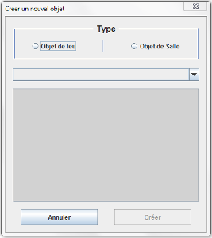
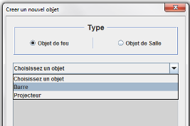
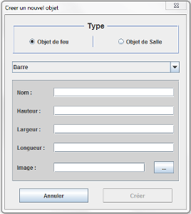
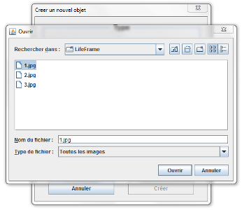
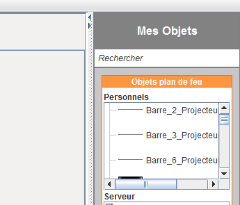

Pour créer un nouvel objet, cliquez sur le bouton Nouveau en bas du menu de droite contenant les arborescences des objets. Cette fenêtre apparaîtra alors :

Choisissez ensuite le type d'objet à éditer :

Vous pourrez ainsi remplir les différents attributs de l'objet (le nom est obligatoire) :

Si vous souhaitez attribuer une image personnalisée à l'objet, vous pouvez la sélectionner dans un répertoire :

Attention à la résolution de l'image !
L'objet apparaîtra alors dans le menu de droite et vous pourrez l'utiliser sur vos plans.

Si vous souhaitez supprimer un objet, faites clique-droit sur l'objet dans l'arborescence, puis Supprimer.